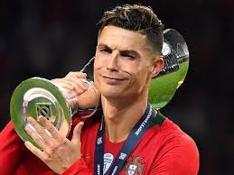
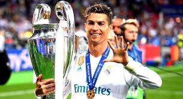
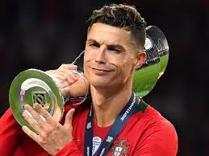
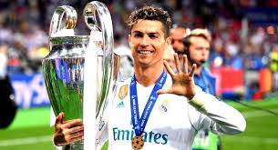

CR7
Cristiano Ronaldo dos Santos Aveiro nasceu na cidade de Funchal, na Ilha da Madeira, Portugal, no dia 05 de fevereiro de 1985. Filho caçula do jardineiro José Diniz Pereira Aveiro e da cozinheira Maria Dolores dos Santos Aveiro, quando criança passava a maior parte de seu dia jogando bola na rua com os amigos
No dia 14 de abril de 1997, Cristiano Ronaldo fez o teste no Sporting Lisboa e, com apenas 11 anos entrou para as categorias de base do clube, onde jogou no Sub 16, Sub 17 e no Sub 18.
Em 2003, Cristiano Ronaldo chamou a atenção do técnico do Manchester United, da Inglaterra. Foi contratado para substituir o jogador David Beckham, que havia sido contratado pelo Real Madrid, da Espanha.
 



conquistas
Sporting
Supertaça de Portugal 2002
Manchester United
- Copa da Inglaterra 2003-2004, 2007-2008
- Copa da Liga Inglesa 2005-2006
- Campeonato Inglês 2006-07, 2007-08
- Liga dos Campeões da Europa 2007-2008
Mundial de Clubes 200
Real Madrid
- Campeonato do Mundo de Clubes da FIFA: 2014, 2016, 2017
- Supercopa da UEFA: 2014, 2017
- Campeonato Espanhol: 2011–12, 2016–17
- Copa do Rei: 2010–11, 2013–14
- Supercopa da Espanha: 2012, 2017
Juventos
- Supercopa da Itália 2018
- Campeonato italiano 2018/19
- Campeonato italiano 2019/10
Prêmios individuais
- Bola de Ouro da Fifa 2013-2014
- Homem do jogo da Supercopa da UEFA 2014
- Melhor Jogador da UEFA 2013-14, 2015-16 e 2016-17
- Bola de Ouro da UEFA 2007-08, 2010-11, 2-13-14, 2014-15
- /Bola de Ouro do Campeonato do Mundo de Clubes 2016
-
- Futebolista do Ano em Portugal 2007, 08, 09, 11, 12, 13, 15, 16, 17 e 18
- Melhor jogador do mundo pela ESPY Awards 2018
- Chuteira de Ouro da revista France Football